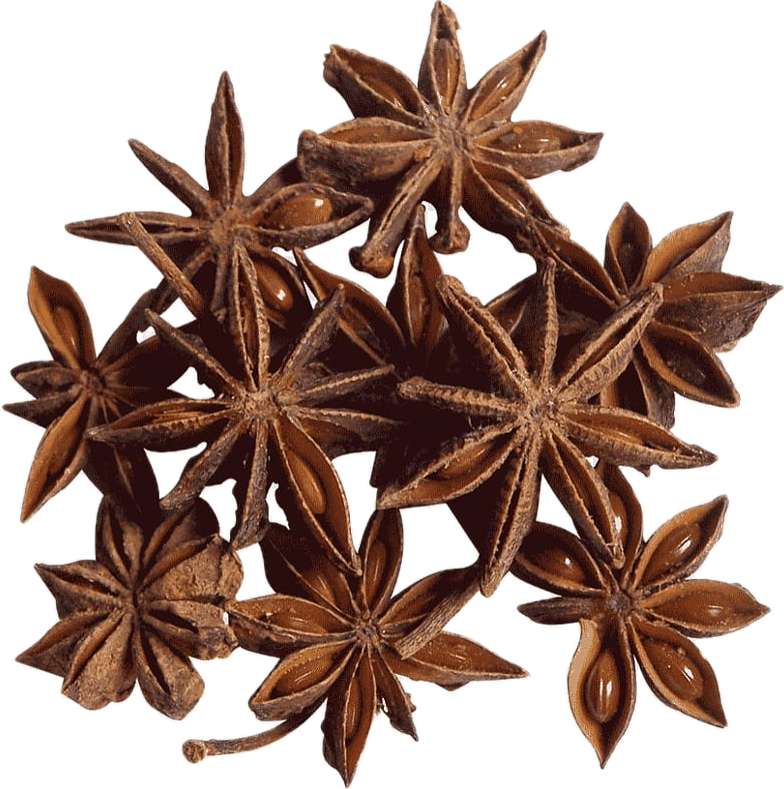

Illicium verum
Overview
Star anise is a spice derived from the fruit of the star anise tree, native to China and Vietnam. It has a distinctive star-shaped appearance with eight pointed pods and a strong, licorice-like flavor and aroma. Star anise is commonly used whole or ground as a culinary spice and flavoring agent.
Cultural Overlap
Star anise is used in cuisines around the world, particularly in Chinese, Vietnamese, Indian, and Indonesian cuisines. It is used to flavor savory dishes such as soups, stews, and braises, as well as sweets, desserts, and beverages. Star anise also has cultural significance in traditional medicine and rituals, where it is believed to have various health benefits and spiritual properties.